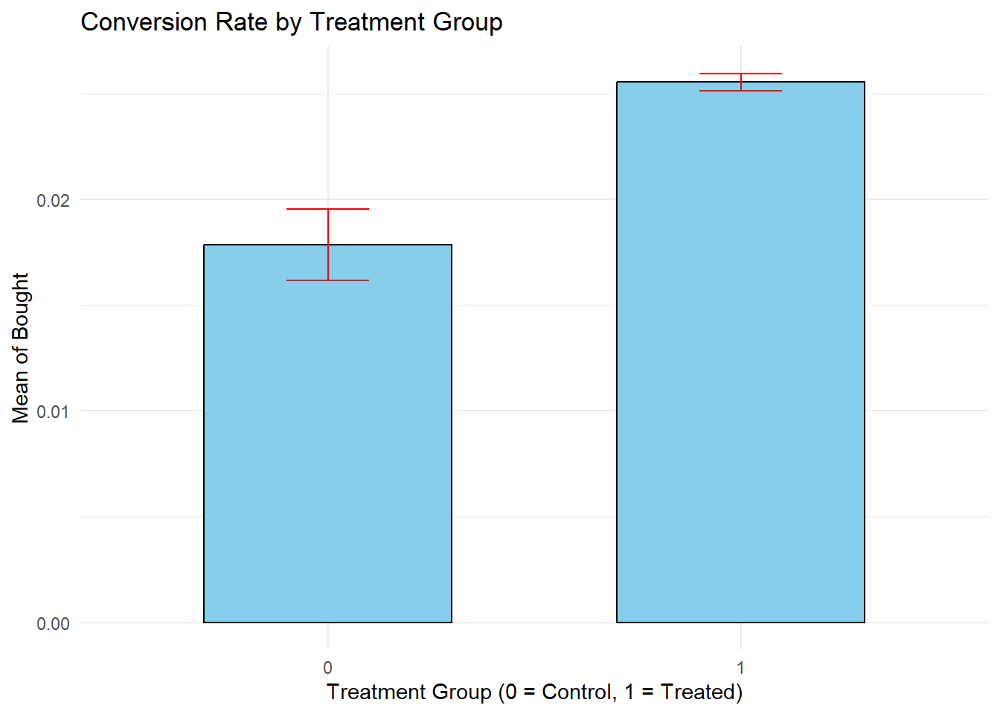

library(tidyverse)
library(janitor)
library(broom)Analítica de Datos
A/B Testing
Preliminaries
Context
Marketing companies want to run successful campaigns, but the market is complex and several options can work. So normally they tun A/B tests, that is a randomized experimentation process wherein two or more versions of a variable (web page, page element, banner, etc.) are shown to different segments of people at the same time to determine which version leaves the maximum impact and drive business metrics.
The companies are interested in answering two questions:
Would the campaign be successful? If the campaign was successful, how much of that success could be attributed to the ads? With the second question in mind, we normally do an A/B test. The majority of the people will be exposed to ads (the experimental group). And a small portion of people (the control group) would instead see a Public Service Announcement (PSA) (or nothing) in the exact size and place the ad would normally be.
The idea of the dataset is to analyze the groups, find if the ads were successful, how much the company can make from the ads, and if the difference between the groups is statistically significant.
Data dictionary:
user id: User ID (unique)
test group: If “ad” the person saw the advertisement, if “psa” they only saw the public service announcement
converted: If a person bought the product then True, else is False
total ads: Amount of ads seen by person
most ads day: Day that the person saw the biggest amount of ads
most ads hour: Hour of day that the person saw the biggest amount of ads
Instructions
Many of you have been running the code directly within the Quarto document. For this assignment, I will ask you to proceed as follows:
- Write all the code required to solve the exercises in a separate
R script. Do not include any answers in this file, but make sure to add comments indicating the exercise number, like this:
# Exercise 1
Whatever code you use for solving Exercise 1
# Exercise 2
Whatever code you use for solving Exercise 2
Start with this step, as it will make it easier to copy the code into the Quarto document later.
In a separate
PDFcreated with Quarto, provide your answers and visualizations (e.g., plots). Do not include any of their codes in this document. However, regression outputs and other results should be included in thePDF, along with their respective code.Please submit both the
R scriptand thePDFfile when you are done. The file names should follow the usual format:name_lastname.
As always, feel free to ask me any questions that may arise during the class.
Exercise 1
Let’s load our usual packages first:
Import the datasets into R and name it experiment (the dataset is in .csv format not in Excel).
Use the glimpse() function to inspect the variables and their data types for both datasets. How many customers do we have in the dataset?
Exercise 2
Use the janitor function to clean the names.
Exercise 3
In Exercise 1, we can see that the variables test_group and converted are not numeric. Create a variable treatment that is equal to 1 if the person saw the advertisement and 0 otherwise. Additionally, create the variable bought that is equal to 1 if the person bought the product and 0 otherwise.
Exercise 4
What proportion of the dataset was treated with the advertisement? Does this figure make sense to you?
What proportion of customers actually bought the product?
Exercise 5
# Summarize data to get mean and confidence intervals for each group
summary_data <- experiment %>%
group_by(treatment) %>%
summarise(
mean_bought = mean(bought, na.rm = TRUE),
ci_low = mean_bought - 1.96 * sd(bought, na.rm = TRUE) / sqrt(n()),
ci_high = mean_bought + 1.96 * sd(bought, na.rm = TRUE) / sqrt(n())
)
# Plot the bar graph with confidence intervals
ggplot(summary_data, aes(x = as.factor(treatment), y = mean_bought)) +
geom_bar(stat = "identity", fill = "skyblue", color = "black", width = 0.6) +
geom_errorbar(aes(ymin = ci_low, ymax = ci_high), width = 0.2, color = "red") +
labs(x = "Treatment Group (0 = Control, 1 = Treated)",
y = "Mean of Bought",
title = "Conversion Rate by Treatment Group") +
theme_minimal()
Check and try to understand the code above. Copy it and paste it in your Quarto document so that the graph is shown in the PDF file. What is the graph showing us?
Exercise 6
Use the group_by and summarise functions to compute the mean of bought by treatment status. What is the value of the mean for each of the columns in the graph in Exercise 5? Explain the meaning of those values in your own words according to the context of the experiment.
Exercise 7
Explain in words what the following code is doing (Hint: We have done hypothesis testing a million times now :D)
t_test_result <- t.test(bought ~ treatment, data = experiment)
t_test_result
Welch Two Sample t-test
data: bought by treatment
t = -8.6572, df = 26384, p-value < 2.2e-16
alternative hypothesis: true difference in means between group 0 and group 1 is not equal to 0
95 percent confidence interval:
-0.009434089 -0.005950817
sample estimates:
mean in group 0 mean in group 1
0.01785411 0.02554656 Exercise 8
Estimate the following regression and name it model_1 (Use the tidy function to show the results):
\[Bought = \hat{\beta_0} + \hat{\beta_1} \times Treatment\] Interpret both coefficients. How this estimation is related to Exercise 7?
Exercise 9
Estimate the following regression and name it model_2:
\[TotalAds = \hat{\beta_0} + \hat{\beta_1} \times Treatment\] Does the treament need more ads to affect the purchase of the product?
Exercise 10
Replicate the code in Exercise 5 but with total_ads as outcome (Change the name of the title and each of the axis accordingly). Does the graph concide with the results in Exercise 9?
Exercise 11
Estimate the following regression and name it model_3:
\[MostAdsHour = \hat{\beta_0} + \hat{\beta_1} \times Treatment\] What can you conclude based on this estimation?